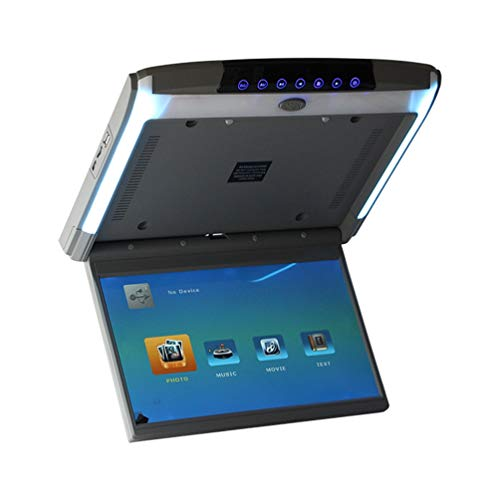
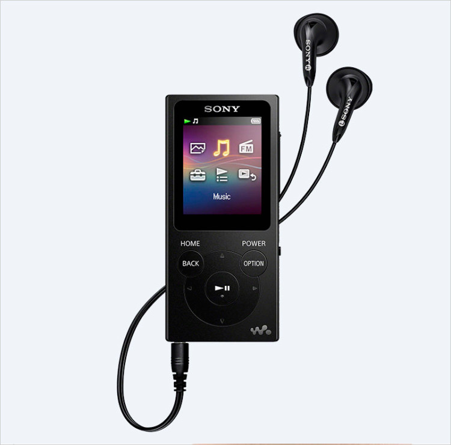
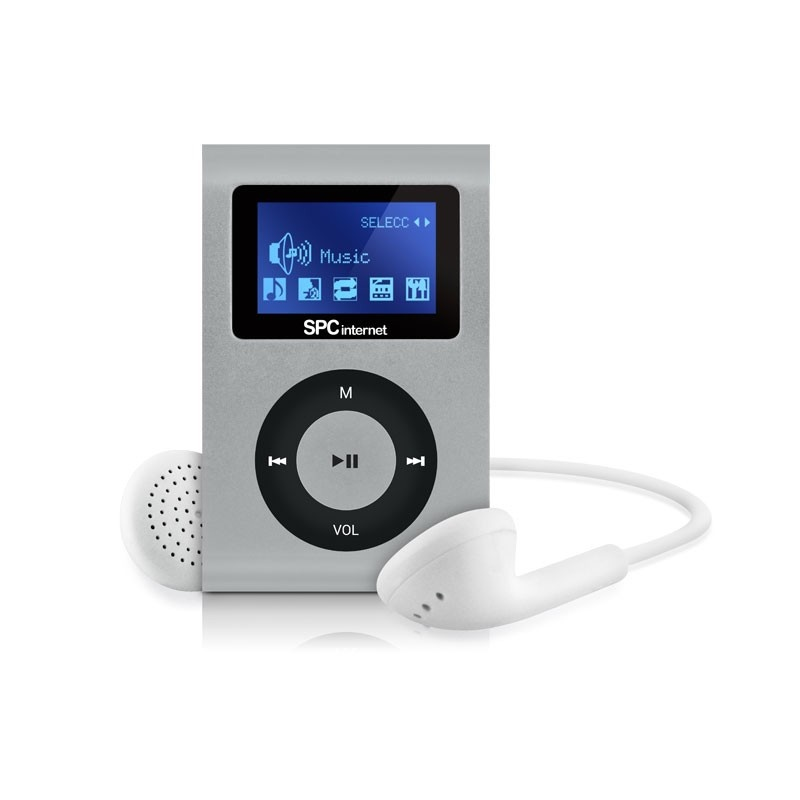

Es capaz de generar sonido surround con sus altavoces integrados. Para alamacenar todo este contenido multimedia cuenta con 2GB de memoria interna y externa.
Dícese de un apelativo engañoso que describe aquellos reproductores de música que reproducen vídeo y también llevan TDT incorporado. Dicho esto, os presento el Blusens P80, un reproductor MP5.

|  | REPRODUCTOR MP5 ENERGY |
El mercado de los DVD está |
PMP de Aigo:El PMP tiene una pantalla de 4.3 |
 |